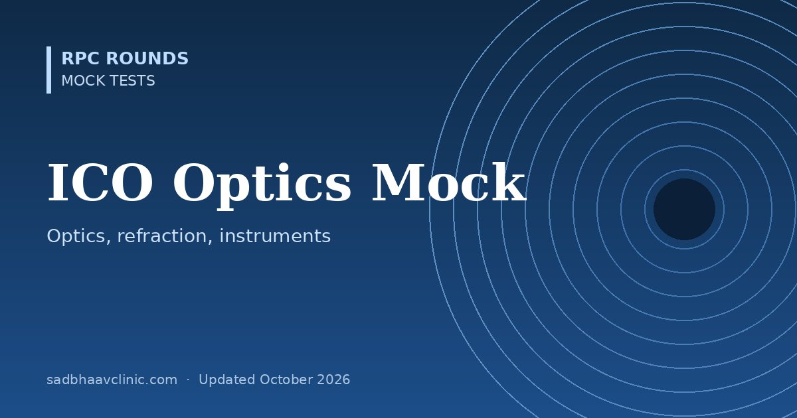

ICO Optics, Refraction and Instruments Mock Test: 50 MCQs
Last updated: October 2026
A timed 50-question mock for the International Council of Ophthalmology Optics, Refraction and Instruments (ORI) examination, one of the Standard Examinations on the way to the Advanced Examination and FICO.
- The real exam: 60 single-best-answer questions with four options in 90 minutes, in English, taken in your own country. No marks are lost for wrong answers.
- This mock: 50 questions on geometric optics, refraction, accommodation, retinoscopy, instruments, lasers, contact lenses, IOL calculation and visual function, with worked calculations.
- Also useful for FRCOphth Part 1, FRCS Part 1 and OKAT Module 1 optics.
Planning to work or train abroad? Read our guide to ophthalmology exams abroad for formats, eligibility and official links.


Want thousands more practice questions?
OKAT Decoded covers the same core ophthalmology curriculum in 10,200 original MCQs, every answer explained, with 18 full-length mock tests.
All questions are original and written for practice. They are not taken from any past paper, and this test is not affiliated with or endorsed by the examining body. Exam formats change: confirm details on the official website.
📘 Want more exam-ready material? See Most Commons in Ophthalmology on Kindle, or browse all my books.
Looking for an eye specialist in Ahmedabad? Learn about our Eye Department or book a consultation with Dr. Dhaval Patel.